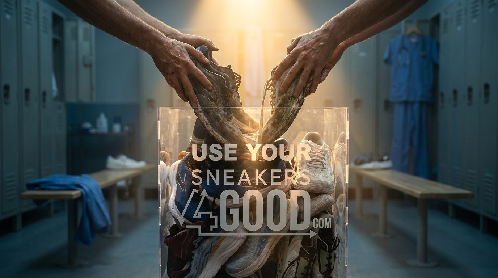
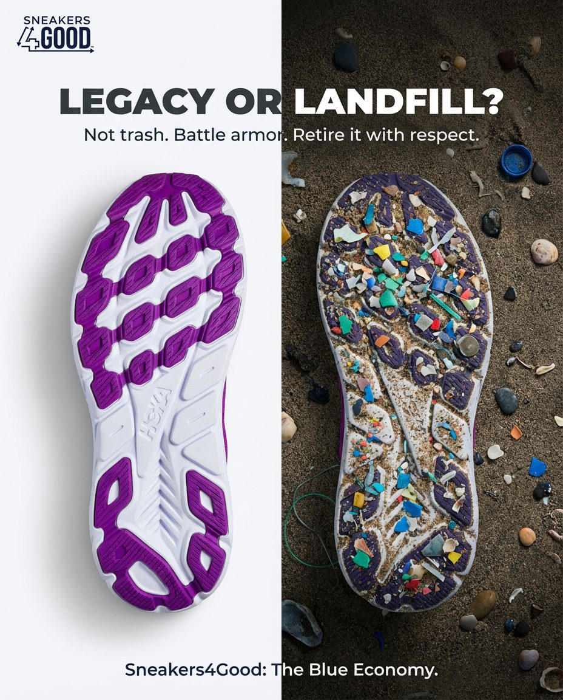
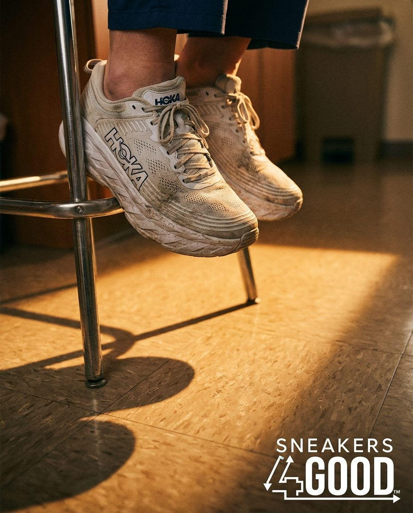
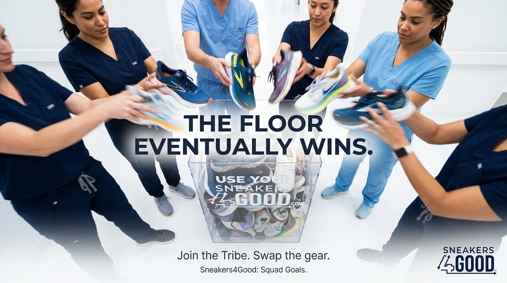

Behavior · Targeting Sneakers4Good
The Strategy That Turned Worn-Out Shoes Into a Retention Tool
Sneakers4Good: Healthcare Behavioral Architecture & Targeting Campaign

Genre: Brand Strategy · Behavioral Design · Growth Strategy · Healthcare Marketing · AI Consulting
Tools: Custom LLM Gems · Behavioral Audit Framework · Interest Graph Targeting · Meta Ads · Canva · Photoshop · Google Analytics
Nurse turnover costs hospitals $61,110 per RN. The industry's response has been hero-washing, emotional campaigns that acknowledge sacrifice without solving anything. Sneakers4Good had a better answer: a zero-cost retention and sustainability program built around the one thing every nurse wears out on the job.
My role as Chief Global Growth Strategist was to architect the strategic pivot that made it work at enterprise scale. That meant replacing sentiment with behavioral science, building a targeting system that bypassed legal geofencing constraints, and engineering a Sludge Audit that removed every friction point standing between an exhausted nurse and a donation drop.
The result: $152k in projected retention savings per 500 RNs, 14 metric tons of Scope 3 emission reductions per 1,000 pairs, and a scalable system positioned to solve a $5M annual loss problem for enterprise clients like Mars Veterinary.

Deliverables At A Glance
- Behavioral Architecture: Full "Sludge Audit" friction removal system
- Hospital Enterprise Pitch: The $61k Problem framework
- Interest Graph Targeting Strategy to bypass NY and WA geofencing laws
- Campaign creative direction across four distinct visual territories
- "Dead Foam" educational content system: 400 miles lifecycle framework
- Nurse and Veteran targeting architecture
- AI-assisted campaign strategy and workflow
- Marketing operations and performance governance framework
The Challenge
Two compounding problems needed to be solved simultaneously. The first was behavioral. Healthcare workers are exhausted, time-compressed, and psychologically conditioned to deprioritize anything that feels like extra work. A donation program, however well-intentioned, reads as friction. The Sludge Audit identified four distinct friction categories: Learning Costs, Compliance Costs, Navigational Costs, and Psychological Costs; each one a drop-off point that needed to be systematically eliminated.
The second was legal. New York and Washington state laws prohibit geofencing hospitals, which eliminated the most obvious targeting approach. Reaching nurses digitally required a more sophisticated solution built on identity and intent rather than location.
Both problems required behavioral science, not marketing instinct.
How I Built It
The Sludge Audit came first. Every step in the donation journey was mapped and stress-tested against the reality of a nurse who just finished a twelve-hour shift. Learning Costs were eliminated by making the science undeniable: 'Mud and Blood OK' removed the doubt that dirty shoes wouldn't qualify. Compliance Costs were cut by pre-populating QR codes linked to ID.me profiles, eliminating manual data entry entirely. Navigational Costs were solved by targeting the Privileged Moment: the locker room, the point of shoe removal, the exact second the behavior was most likely to occur. Psychological Costs were reframed entirely: dirty, worn-out shoes aren't embarrassing, they're battle armor. Retire them with respect.
For targeting, I developed an Interest Graph strategy built on identity stacking: Nurse Identity + Brand Affinity (HOKA/Brooks) + Purchase Intent (Discount Signal). This formula reached the right audience without a single geofence, and positioned the post-purchase moment as the highest-leverage conversion point. what I called the Unicorn Ad.
The hospital enterprise pitch was built around a single number: $61,110. That's the average cost of nurse turnover in 2025. Sneakers4Good is positioned as a zero-cost retention tool: the ROI framing shifts the conversation from charity to operational efficiency, targeting Sustainability Directors at AdventHealth and HCA Healthcare.
The Experience
The campaign ran across four distinct visual and emotional territories:
Squad Goals: Nurses in scrubs dropping shoes into a collection box together. Community and shared identity as the primary behavioral driver.
The Blue Economy: 'Legacy or Landfill?': a split visual of a clean sole versus microplastics on a beach. Environmental consequence made visceral and personal.
Anatomy of Wear: 'It's Not Your Posture. 400 Miles = Dead Foam.' Scientific validation that the shoe is the problem, not the wearer (removing shame and replacing it with logic.)
For the Night Shift: 'The shoes are heavy. The tribe is light.' Black and white editorial photography. Pure emotional resonance for the post-shift audience.
Each territory was designed to hit a different psychological entry point (community, environmental identity, rational logic, and emotional belonging) ensuring the campaign worked across audience segments and placements simultaneously.

What I Learned
Behavioral friction is invisible until you audit for it. Most campaigns fail not because the message is wrong but because the path to action is too hard for the person being asked to take it. In healthcare, where cognitive load is already maxed out, removing friction isn't a nice-to-have, it's the entire strategy. Every element of this campaign was designed around reducing the number of decisions a nurse had to make, not increasing the emotional pressure to make them.

Why It Matters
Sneakers4Good proves that sustainability programs don't have to choose between impact and adoption. When you engineer the behavioral path correctly (audit the sludge, stack the identity signals, target the privileged moment) a worn-out shoe becomes a retention tool, a sustainability metric, and a community builder simultaneously. That's not marketing. That's architecture.
Strategic ROI / The Impact
$152k in projected retention savings per 500 RNs at 1% retention improvement
14 metric tons of Scope 3 emission reductions per 1,000 pairs diverted from landfill
Zero-cost positioning for enterprise hospital systems, solving a $5M annual loss problem
Targeting system built to scale across AdventHealth, HCA Healthcare, and Mars Veterinary without geofencing dependency
Four-territory campaign system deployable across Meta, Instagram, and paid social with no channel overlap
The Bigger Picture
The best behavioral campaigns don't feel like campaigns. They feel like someone finally understood the problem. Sneakers4Good had a mission that mattered and a product that worked, what it needed was a strategic architecture that made the right behavior the easiest behavior. That's what this engagement delivered. And it scales.
The Tech & AI Stack
Custom LLM Gems, Meta Ads Manager, Interest Graph Targeting, Behavioral Audit Framework, ID.me Integration Strategy, Canva, Photoshop, Google Analytics, Social Platforms
Have a mission that needs a strategy to match? Start the Conversation
$152k in projected retention savings per 500 RNs at 1% retention improvement
14 metric tons of Scope 3 emission reductions per 1,000 pairs diverted from landfill
Zero-cost positioning for enterprise hospital systems, solving a $5M annual loss problem
Targeting system built to scale across AdventHealth, HCA Healthcare, and Mars Veterinary without geofencing dependency
Four-territory campaign system deployable across Meta, Instagram, and paid social with no channel overlap
Want this kind of work on your brand?
If your brand should be working harder than it is, this is where it starts. One direct conversation.